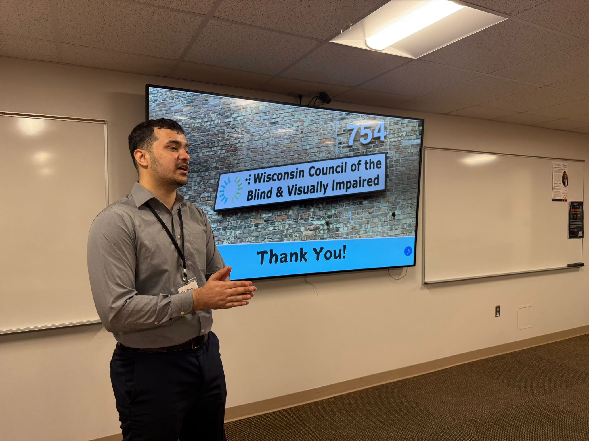

Why International Students Deserve a Pathway to Stay
This article explores the economic, academic, and social contributions of international students, and makes a strong case for providing a pathway to permanent residency after graduation.
3 min read